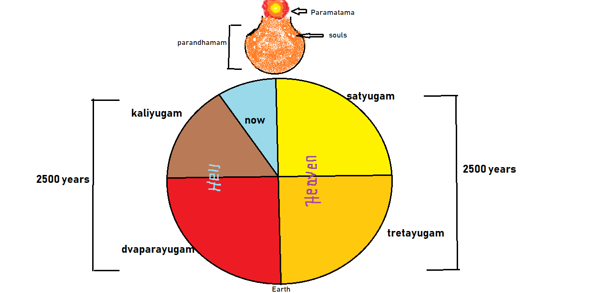

When we say Lord Shiva, what often comes to mind is a person with a trident, snake around his neck, and tiger skin attire...
Actually, Lord Shiva is a soul (Param Aatma). We are also souls, not this body!
Shiva is the Father of all souls.
THERE IS ONLY ONE GOD WHO HAS MANY NAMES.
Why we worship Param Aatma (Shiva) as Shivling: Shiva's devotees perform daily poojas—abhishekam, deepa aarti, etc. For these rituals, they construct a Shivling assuming its oval shape represents the soul. Souls (like us) are a point of light. Our God is also a point of light. For devotional purposes, the symbolic form is made larger—that's why we worship Shiva as Shivling.
This is Sankar—not Shiva. Why do we call him Shiva then? Because Sankar was a deep devotee of Lord Shiva, and people mistakenly assumed he was Shiva himself.
Just think—if Sankar is God, then who is he remembering in meditation? God, right? For meditation, we remember God. Sankar meditates on Lord Shiva as a point of light (soul) and practices Raja Yoga. We've misunderstood and started worshipping Sankar as Shivling.
Just like Sankar, we too should remember God as a point of light in a golden-orange sky (Parandhamam—the abode of God). Doing so helps us stay in Soul Consciousness. When we're in Soul Consciousness, we avoid vices like Lust, Anger, Attachment, Greed, Arrogance.
We're in Kaliyug, an age of sorrow. God gives this knowledge to his beloved children so they can become free from sorrow.
By remembering God as the Soul, we can transcend Kaliyug and move toward Mukti Dham (liberation) and enter the Upcoming Satyug (Golden Age).
OM SHANTHI :)
